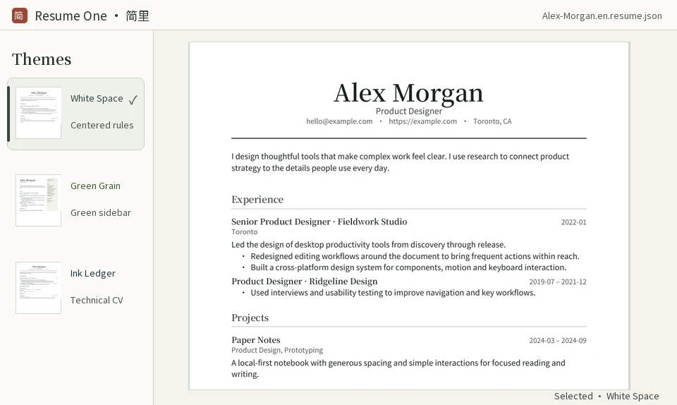

Your files, on your deviceOpen files or folders. Edit and export offline.
Built on JSON ResumeReuse the same data across layouts and output formats.
macOS / WindowsA native desktop app with a standalone command-line tool.
One résumé, two views
Press ⌘ + / or Ctrl + / to switch between source and preview. The theme rail slides away while the sections panel stays in place.
Hover over Experience to reveal the form. Move away to return to the page, or click the entry to open the form.
Alex-Morgan.en.resume.json
Alex Morgan
Product Designer
hello@example.comhttps://example.comToronto, CA
I design thoughtful tools that make complex work feel clear. I use research to connect product strategy to the details people use every day.
Experience
Led the design of desktop productivity tools from discovery through release.
Skills
Design methods
User research · Information architecture · Interaction design
Web demo · Changes stay on this page
Try changing a line of JSON or hover over Experience in this browser demo.
The same content.A different layout.
Hover over a theme to preview it with your current résumé. Move away to restore the selected theme, or click to apply. Adjust content, fonts and colors independently.

From the exported PDF ·White SpaceHover to preview · Move away to restore · Click to apply
Local themes
Choose from 20 built-in layouts. Downloaded themes stay in the folder you choose and work offline.
Adapted community themes
67 individually reviewed A4 layouts, with fonts and license information retained. Edit directly on the page.
Original JSON Resume themes
13 upstream templates render your résumé live on your device, with on-page editing and thumbnails generated from the original layout.
Both catalogs are served from the theme repository. In Manage, add more GitHub sources and give each a display name.
On Mac, open About This Mac from the Apple menu and look for Chip or Processor. On Windows, go to Settings → System → About and check whether System type says x64 or ARM64.
Where are my résumé files kept?
Choose any local folder, or use an iCloud Drive or OneDrive folder and let that service sync it. Preview and export run on your device.
Can I change fonts and colors?
In Appearance, hover to try installed fonts and colors, then click to save your preference. You can import fonts or pick a color from the screen. Your résumé JSON stays intact.
Can I edit on the page with original themes?
Yes. Hover over a visible section or entry to reveal its form. You can undo changes, and use the sections panel to add or remove entries. Original-theme PDF and thumbnail generation use an installed copy of Chrome, Edge or Chromium.